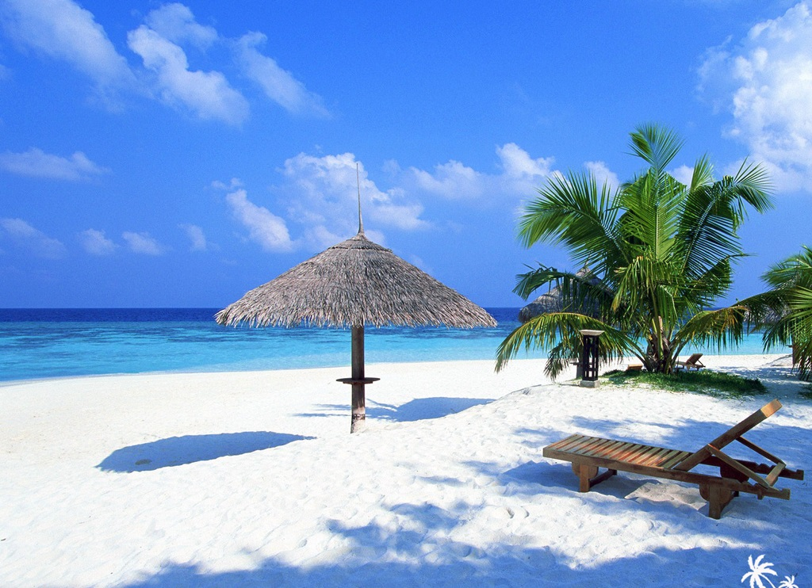
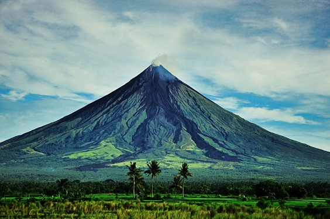
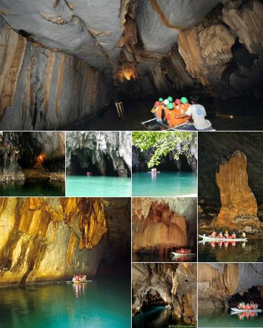
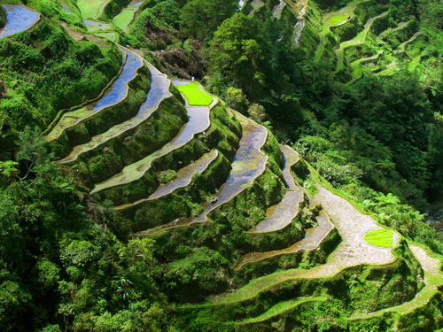
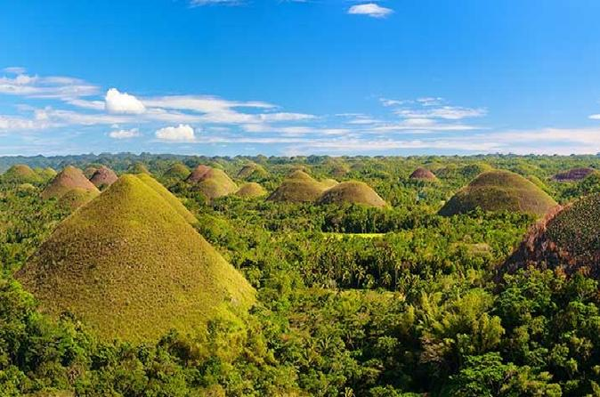

Boracay
- is a small island in the Philippines located approximately 315 km (196 mi) south of Manila and 2 km off the northwest tip of Panay Island in Western Visayas region of the Philippines.
Boracay Island and its beaches have received awards from numerous travel publications and agencies.

Mayon Volcano in Albay
- also known as Mount Mayon or simply Mayon, is an active stratovolcano in the province of Albay in Bicol Region, on the island of Luzon in the Philippines.
Renowned as the "perfect cone" because of its symmetric conical shape, the volcano and its surrounding landscape was declared a national park on July 20, 1938, the first in the nation.

Underground River in Puerto Princesa
- is a protected area of the Philippines located about 80 kilometres north of the city centre of Puerto Princesa, Palawan. The river is also called Puerto Princesa Underground River.

Banaue Rice Terraces in Ifugao
- are 2,000-year-old terraces that were carved into the mountains of Ifugao in the Philippines by ancestors of the indigenous people.
The Rice Terraces are commonly referred to as the "Eighth Wonder of the World".

Chocolate Hills in Bohol
- The Chocolate Hills are a geological formation in the Bohol province of the Philippines.
There are at least 1,260 hills but there may be as many as 1,776 hills spread over an area of more than 50 square kilometres.